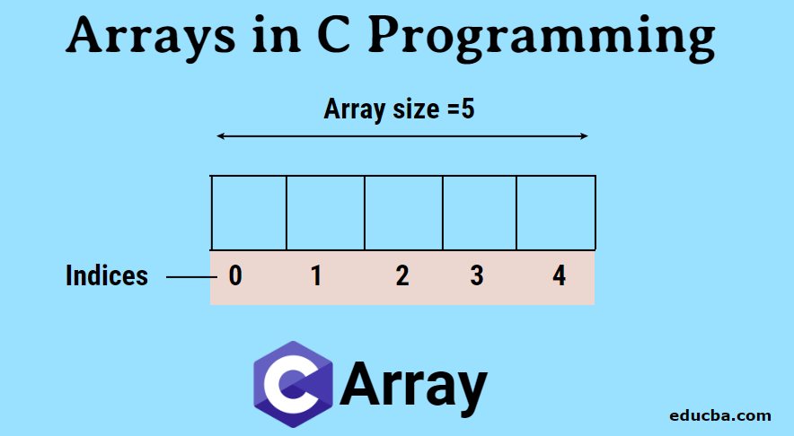
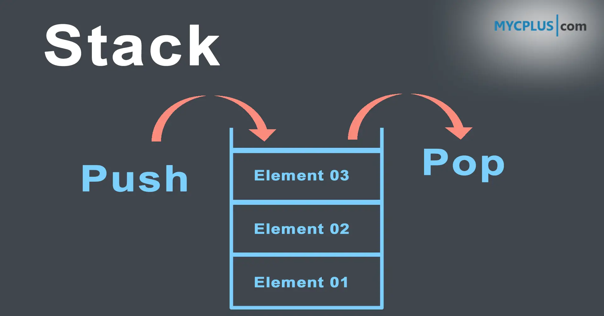
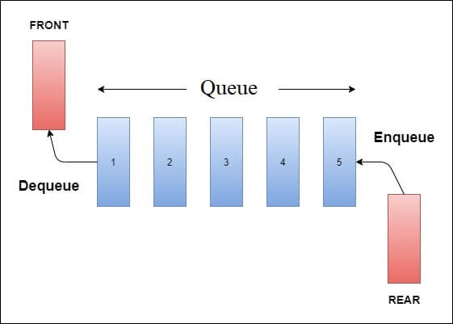
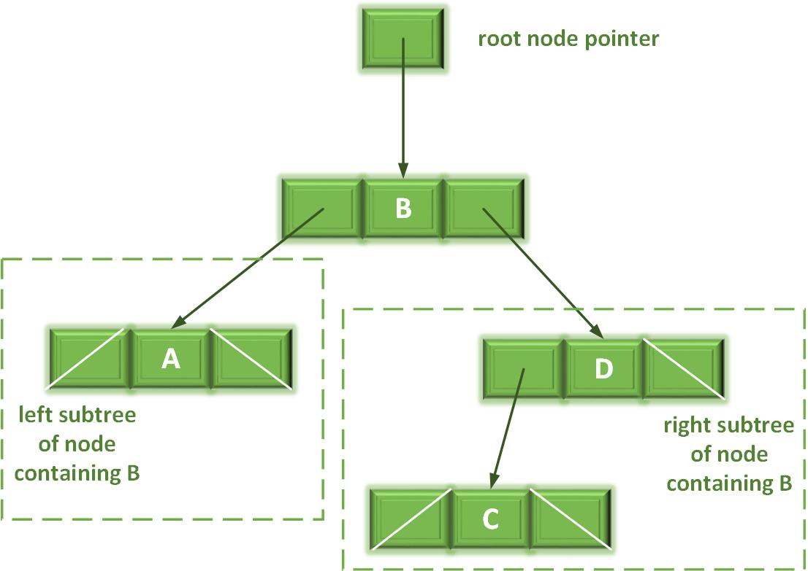
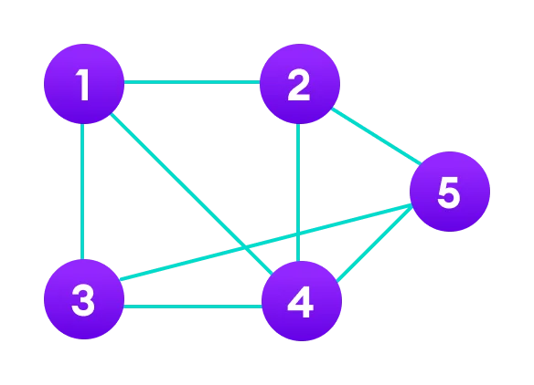

Array
An array is a collection of elements of the same type, stored in contiguous memory locations.
Collection of Elements: An array is a collection of elements of the same data type, such as numbers, strings, or objects. The elements in an array are stored in contiguous memory locations.
Fixed Size: Arrays have a fixed size, meaning that you specify the number of elements it can hold when you create it. Once an array is created, its size typically cannot be changed dynamically.
Indexing: Each element in an array is assigned a unique index, starting from zero. The index allows you to access and manipulate individual elements within the array. You can access an element by using its index, such as `arrayName[index]`.
Random Access: Arrays provide fast random access to elements. Since the elements are stored contiguously, accessing an element using its index has a constant time complexity of O(1).
Homogeneous: Arrays store elements of the same type. This means that all elements in an array must have the same data type, such as all integers or all strings.
Iteration: You can iterate over the elements of an array using loops, such as `for` or `while`. This allows you to perform operations on each element sequentially.
Manipulation: Arrays provide various methods to manipulate their elements, such as adding or removing elements, sorting, searching, and transforming the array.
Multidimensional Arrays: In addition to one-dimensional arrays, many programming languages support multidimensional arrays. These arrays can have multiple dimensions, such as rows and columns, allowing you to represent tables, matrices, or grids.
Arrays are fundamental data structures in programming, and they play a crucial role in many algorithms and applications. They provide an efficient way to store and access collections of data, making it easier to work with large datasets and perform operations on them.

Linked List
A linked list is a linear data structure where each element contains a reference to the next element.
Node Structure: Each node in a linked list contains two parts: the data and a reference to the next node. The data can be of any type, such as integers, strings, or objects.
Linking Nodes: The reference in each node points to the next node in the sequence, forming the "link" between nodes. This link is often represented by a pointer or a reference to the memory address of the next node.
Dynamic Size: Unlike arrays, linked lists can grow or shrink dynamically. They do not require a predefined size, and nodes can be added or removed as needed.
Unrestricted Insertion and Deletion: Linked lists allow efficient insertion and deletion of nodes at any position within the list. Since each node stores a reference to the next node, reorganizing the links can easily add or remove nodes.
Sequential Access: Linked lists provide sequential access to elements. To access a particular element, you start from the head (the first node) and follow the links until you reach the desired node.
No Random Access: Unlike arrays, linked lists do not support direct random access to elements. To access an element, you need to traverse the list from the beginning.

Stack
A stack is a data structure that follows the Last-In-First-Out (LIFO) principle.
LIFO Principle: The Last-In-First-Out principle means that the most recently added element is the first one to be removed. Imagine a stack of plates, where you can only add or remove plates from the top.
Operations: Stacks typically support two main operations:
Push: Adds an element to the top of the stack.
Pop: Removes the topmost element from the stack.
Peek: In addition to push and pop, stacks often provide a peek operation that allows you to view the top element without removing it.
Implementation: Stacks can be implemented using various data structures, such as arrays or linked lists. The choice of implementation depends on the specific requirements of the program.
Memory Allocation: Stacks typically allocate memory in a contiguous block, with a fixed size or dynamically resizing as needed.
Usage: Stacks are used in a wide range of applications, including but not limited to:
Function call stack: In many programming languages, function calls are managed using a stack structure. When a function is called, its execution context is pushed onto the stack, and when the function returns, its context is popped from the stack.
Expression evaluation: Stacks can be used to evaluate expressions, such as arithmetic expressions, by storing operators and operands in the stack and performing operations based on their precedence.
Undo/Redo functionality: Stacks are often used to implement undo and redo operations in applications where actions can be reversed or repeated.

Queue
A queue is a data structure that follows the First-In-First-Out (FIFO) principle.
FIFO Principle: The First-In-First-Out principle means that the first element added is the first one to be removed. It is similar to a queue of people waiting in line, where the person who arrives first is the first one to be served.
Operations: Queues typically support two main operations:
Enqueue: Adds an element to the end (rear) of the queue.
Dequeue: Removes the element from the front of the queue.
Peek: In addition to enqueue and dequeue, queues often provide a peek operation that allows you to view the front element without removing it.
Implementation: Queues can be implemented using various data structures, such as arrays or linked lists. The choice of implementation depends on the specific requirements of the program.
Memory Allocation: Queues typically allocate memory in a contiguous block, with a fixed size or dynamically resizing as needed.

Tree
A tree is a hierarchical data structure with a set of connected nodes.
In programming, a tree is a hierarchical data structure that represents a collection of elements called nodes. It is composed of nodes connected by edges or branches, forming a structure that resembles an inverted tree.
Node Structure: Each node in a tree contains a piece of data and may have links (edges) to other nodes. The data can be of any type, such as numbers, strings, objects, or even another tree.
Root Node: The topmost node in a tree is called the root node. It serves as the starting point and acts as the parent for all other nodes in the tree.
Parent and Child Nodes: Nodes in a tree can have relationships. A node that is connected to another node below it is called the parent node, and the connected node is called a child node. A parent node may have multiple child nodes, but a child node can have only one parent.
Leaf Nodes: Leaf nodes, also known as terminal nodes, are nodes that have no child nodes. They are at the bottom of the tree and do not have any branches connected to them.
Internal Nodes: Internal nodes are nodes that have at least one child node. They are intermediate nodes in the tree structure, connecting other nodes.
Depth and Height: The depth of a node is the number of edges from the root node to that node. The height of a tree is the maximum depth among all nodes. The root node has a depth of 0, and the height of a tree is the maximum depth from the root to any leaf node.
Tree Traversal: Tree traversal refers to the process of visiting and processing all nodes in a tree in a specific order. Common tree traversal algorithms include depth-first traversal (pre-order, in-order, post-order) and breadth-first traversal.
Binary Trees: A binary tree is a special type of tree where each node can have at most two child nodes, referred to as the left child and the right child. Binary trees are commonly used in various applications and algorithms.
Balanced Trees: Balanced trees are trees that maintain a balance between the left and right subtrees. Examples include AVL trees, red-black trees, and B-trees. Balanced trees help ensure efficient operations and prevent worst-case scenarios.

Graph
A graph is a non-linear data structure consisting of a set of nodes connected by edges.
In programming, a graph is a non-linear data structure that consists of a collection of nodes (also called vertices) connected by edges. It represents relationships or connections between entities.
Nodes (Vertices): Nodes are the fundamental units of a graph. Each node represents an entity or a data point. Nodes can hold additional information or attributes.
Edges: Edges are the connections between nodes. They represent the relationships or connections between entities in the graph. Edges can be directed or undirected, indicating the directionality of the relationship.
Directed vs. Undirected Graphs: In a directed graph, edges have a specific direction, meaning they point from one node to another. In an undirected graph, edges have no direction and can be traversed in both directions.
Weighted Graphs: In some graphs, edges can have associated weights or costs. These weights can represent various metrics, such as distances, time, or costs associated with traversing the edge.
Adjacency: The adjacency of nodes refers to the relationship between nodes that are connected by an edge. Nodes that share an edge are considered adjacent to each other.
Connectivity: The connectivity of a graph refers to how nodes are connected to each other. A graph can be connected, meaning there is a path between any two nodes, or it can be disconnected, meaning there are isolated sets of nodes with no paths between them.
Cycles: A cycle in a graph is a path that starts and ends at the same node, passing through a series of nodes and edges. Cycles can occur in graphs, and their presence or absence can have implications in certain algorithms and applications.
Graph Traversal: Graph traversal refers to the process of visiting and processing all nodes in a graph. Common graph traversal algorithms include depth-first search (DFS) and breadth-first search (BFS).
Graph Representation: Graphs can be represented using different data structures, such as adjacency matrix (2D matrix representing the connections between nodes) or adjacency list (a collection of linked lists or arrays representing the connections of each node).
